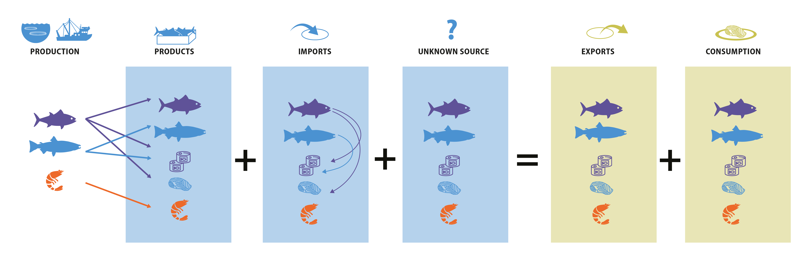

Frequently Asked Questions
What does it mean when a scientific name is not a true species name?
The ARTIS model disaggregates reported aquatic resource products (e.g., frozen salmon filets) into species/species groups based on two pieces of information: 1) reported production data and 2) the lowest taxonomic resolution of the code.
For the first piece, the mass balance portion of the model estimates the species/species group mix within each domestically-produced product code. We also estimate the processing and re-export of imported products. This allows us to estimate the share of exports sourced from domestic versus foreign production and by using the bilateral trade data, we can trace products back to the country of harvest. The species/species group mix within the code can then be assigned. Consequently, if a country reports production of “bivalvia,” then “bivalvia” will appear in the trade network.
For the second source of taxonomic information, we look at all species that fall within a code and identify the lowest common taxonomic name. All exports identified as “error” receive this name. We also have an additional column that can be joined to ARTIS so that these names can be used in place of the model specified name when the lowest taxonomic name for the code is more detailed than the name based on the production data. Note though that if these improved names are used, domestic exports can exceed domestic production. These names (sciname_hs_modified) can be obtained for the trade data by joining the appropriate additional table by the original scientific name, the code, and the HS version. The column “sciname_hs_modified” is provided in the consumption table.
Why don’t the trade totals match what a country reports?
Reported trade data can (and often does) disagree across sources and it is generally not easy to determine why. Recall that ARTIS represents a disaggregation of BACI data. BACI is a reconciled version of UN Comtrade data, which is the official international database for bilateral trade. A given country’s trade reported to UN Comtrade can differ from what appears in BACI due to the method for reconciling the mirror trade records (see Data or CEPII BACI for more).
In addition to differences between BACI and UN Comtrade, sometimes national statistics available through a government’s website differ from what appears in UN Comtrade. There are likely multiple reasons why this could occur and we cannot explain these in all cases. A few factors that can be relevant include differences in the national trade codes (which often expand upon the 6-digit HS system), differences in when the data was last updated (which is particularly relevant for trade data for recent years) and how national statistics report products in-transit through the country.
Another source of trade data is bill of ladings data, which is generally not publicly available (though it can be purchased). Bill of ladings data includes finer spatial and temporal resolution and also includes information on the companies involved in trade. We have observed some large differences in the bill of ladings data that we have worked with compared to national and international statistics. Understanding for any individual country and bill of ladings data source why requires researching the specifics of the data source itself (i.e., we cannot provide a general explanation for this).
One other point to confirm when comparing data sources is that both sources are reporting the values in the same units (e.g., gross product weight in kg) as there are often multiple weight fields, in addition to value.
How is distant water fishing captured?
When developing the ARTIS model, we assume that countries report data as it should be reported under existing international standards. According to the Coordinating Working Party on Fishery Statistics, catch and landings should be assigned to the country of the flag flown by the fishing vessel irrespective of the location of the fishing. This means that production resulting from a country operating a fishing vessel in a foreign country’s territory should be recorded in the national statistics of the foreign fishing vessel. However, if the vessel is chartered by a company based in the home country or the vessel is fishing for the country under a joint venture contract or similar agreement and the operation is integral to the economy of the host country, this does not apply. Consequently, our estimates of source country generally represent who harvested or caught the aquatic resource regardless of where it was produced (i.e., distant water fishing would generally be attributed to the flag state). In cases of exceptions related to select chartered foreign vessels, joint ventures, or other similar agreements, catch by a foreign vessel but reported by the host country may not match trade reporting if catch does not move through the customs boundary. These instances generate excess apparent consumption.
What is the effect of underreported catch?
Unreported or underreported catch results in lower production data than what actually occurred. Since the ARTIS model is searching for a solution that explains a country’s exports while minimizing the error term (among other objectives), the first impact of un/under-reported catch is that the country’s apparent consumption will be lower. However, since no terms can go negative, if the exports still cannot be explained by the production and imports, then it will result in a positive error term for the product. It can be helpful to think about the mass-balance problem to understand the effects of changes in production data:

What is the effect of products in transit through an intermediate country?
Trade statistics are managed by each territory and generally guided by the Kyoto Convention. For the purposes of trade data reporting, imports and exports represent all goods which add or subtract, respectively, from the stock of material resources within an economic territory, but not goods which merely pass through a country’s economic territory. The economic territory generally coincides with the customs territory, which refers to the territory in which the country’s custom laws apply. Goods which enter a country for processing are included within trade statistics. Goods which pass through a country “in transit,” including those which are transshipped, are not recommended to be reported in trade statistics, though there are exceptions and known instances where one country reports trade which is “in transit” but the partner does not, which creates discrepancies that are not corrected for within BACI. Fishery products from within the country, the country’s waters, or obtained by a vessel of that country are considered goods wholly produced in that country. Catch by foreign vessels and catch by national vessels on the high seas landed in a country’s ports are recorded as imports by the country the products are landed in and as exports by the foreign nation, where economically or environmentally significant. For further trade statistic guideline details, see International Merchandise Trade Statistics: Concepts and Definitions 2010.
Why are there sudden spikes?
There are two common causes of artificial spikes. The first is related to improved resolution in a country’s production data. If a country previously reported production at the genus level, for example, but then starts reporting production at the species level, it could create a spike in the trade associated with the species name. In this case, one could look for a corresponding drop in the genus level data.
The second reason is related to change in the HS code system. HS codes are updated every 5 years. To create a continuous time series, we default to selecting one HS version for each year. There are slight lags in reporting under each new HS version (see figure below), so our custom time series adopts the most recent version once the newer version’s reporting approximately sums to the previous version’s reporting. However, changes in the set of HS product codes can create artificial spikes in time series. For example, if a species is traded under a broad code, it may not be well identified in the model, but if that species then gets a more specific code under a new HS version, the model will be able to distinguish that it is in fact that species being traded.
Why are there multiple rows for a single HS product code in the code descriptions metadata file?
Products table check why there are duplicates (usually caused by multiple presentations or states associated with one code, 030719, H5 probably HS12, 20 codes with 2 states or duplicates). Duplicates should be removed before joining.
Why are some seafood products missing?
The primary set of seafood products that are not included are those considered byproducts or co-products of another seafood product (e.g., caviar, shark fins, offal, etc.). This is necessary to avoid double counting. Since all products must be converted into its live weight equivalent to solve the mass-balance problem, converting both a primary product and its coproduct back to its full live weight equivalent would result in the fish being counted twice. Of course in principle, if one knew how often the primary product and coproduct are both produced (over space and time), then both products could be included without double counting. However, to the best of our knowledge such information is not currently available.
Is there price data available?
Price data generally refers to a single transaction, as the price of a product varies throughout a year (or month or even a day). True price data does exist for some products (e.g., through Urner Barry), but people sometimes mean they are looking for unit value data (value/volume) as a proxy for the average price over the period. This can be generated from UN Comtrade or BACI data and we do have an ancillary file containing these values. However, we have not yet included this information in the core database because the data has not been fully explored yet.
Another point to note when it comes to price (or unit value data) is that prices change along the supply chain, particularly with value added processing. So the unit value derived from trade data is not necessarily indicative of the price a landing or the final price consumers face.